Overview of the SPIAT package
Anna Trigos, Tom Yang, Yuzhou Feng, Volkan Ozcoban, Maria Doyle
3 February 2021
Source:vignettes/introduction.Rmd
introduction.RmdIntroduction
SPIAT (Spatial Image Analysis of Tissues) is an R package with a suite of data processing, quality control, visualization, data handling and data analysis tools (Yang et al. 2020). SPIAT is directly compatible with Opal multiplex immunohistochemistry images analysed through the HALO and InForm analysis software, but its intuitive implementation allows use with a diversity of platforms.
The Opal multiplex immunohistochemistry staining protocol enables 6-8 tissue markers to be used simultaneously on a single slide. It is suitable for use with formalin fixed paraffin embedded (FFPE) tissue sections, so it is also of relevance for clinical practice. The fluorescence of each marker is measured through imaging, and each cell is assigned an X,Y coordinate of its location. In effect this provides single-cell resolution. The fluorescence intensity of individual markers are then combined to identify the phenotype of the cells in the tissue.
SPIAT includes novel algorithms for the identification of cell clusters, cell margins and cell gradients, the calculation of neighbourhood proportions, and algorithms for the prediction of cell phenotypes in tissue images. SPIAT also includes speedy implementations of the calculation of cell distances and detection of cell communities. An overview of the functions available is shown in the figure below.

Setting up the data
First we load the SPIAT library.
library(SPIAT)We can use format_image_to_sce to read in and format raw data for SPIAT.format_image_to_sce creates a SingleCellExperiment object. It requires at least 4 arguments:
-
format: INFORM or HALO -
image: path to the raw InForm or HALO image data file -
markers: names of markers used in the OPAL staining. These must be in the same order as the marker columns in the input file, and for InForm must match the marker name used in the input file. One of the markers must be DAPI. -
locations: locations of the markers, either Nucleus, Cytoplasm or Membrane. These must be in the order of the markers. The locations are used to auto-detect the intensity (and dye) columns. Alternatively, the column names can be specified, see below for more information.
Simple import
The simplest way to read in both InForm and HALO files, is to specify the locations of the markers as shown below. This will automatically detect the appropriate intensity (and dye) columns to use. Here we use a tiny InForm file that’s part of the SPIAT package for raw_inform_data but you would replace system.file with /path/to/your/input/file. For information on the InForm and HALO formats see below.
raw_inform_data <- system.file("extdata", "tiny_inform.txt.gz", package = "SPIAT")
markers <- c("DAPI", "CD3", "PDL-1", "CD4", "CD8", "AMACR")
locations <- c("Nucleus", "Cytoplasm", "Membrane", "Cytoplasm", "Cytoplasm", "Cytoplasm")
formatted_image <- format_image_to_sce(
format="INFORM",
image=raw_inform_data,
markers=markers,
locations=locations)InForm input
Intensity columns
If for some reason you don’t want to specify the locations, you can specify the intensity columns with intensity_columns_interest as shown below. This will give the same result as specifying the locations above.
raw_inform_data <- system.file("extdata", "tiny_inform.txt.gz", package = "SPIAT")
markers <- c("DAPI", "CD3", "PDL-1", "CD4", "CD8", "AMACR")
intensity_columns_interest <- c(
"Nucleus DAPI (DAPI) Mean (Normalized Counts, Total Weighting)",
"Cytoplasm CD3 (Opal 520) Mean (Normalized Counts, Total Weighting)",
"Membrane PDL-1 (Opal 540) Mean (Normalized Counts, Total Weighting)",
"Cytoplasm CD4 (Opal 620) Mean (Normalized Counts, Total Weighting)",
"Cytoplasm CD8 (Opal 650) Mean (Normalized Counts, Total Weighting)",
"Cytoplasm AMACR (Opal 690) Mean (Normalized Counts, Total Weighting)"
)
formatted_image <- format_image_to_sce(
format="INFORM",
image=raw_inform_data,
markers=markers,
intensity_columns_interest=intensity_columns_interest)X and Y location columns
format_image_to_sce uses the Cell X Position and Cell Y Position columns in the InForm raw data.
HALO input
Intensity columns
For HALO you can also just specify the locations to auto-detect the columns as shown above. But if you want to specify the columns instead, you can do so with intensity_columns_interest, as shown in the example below. Note that then you also must specify the dye_columns_interest.
Dye columns
format_image_to_sce requires the HALO dye columns to assign the phenotype. If not using locations to auto-detect, these can be specified with dye_columns_interest. These columns have the marker status (1 or 0 for whether the cell is positive or negative for the marker) and these are used to create the phenotype column. For example, if HALO has assigned a cell a marker status of 1 for CD3 and 1 for CD4, SPIAT will give it the Phenotype “CD3,CD4.” Cells that have a marker status of 1 for DAPI and no other marker, are given the phenotype “OTHER.”
raw_halo_data <- "path/to/halo/file"
markers <- c("DAPI", "CD3", "PDL-1", "CD4", "CD8", "AMACR")
intensity_columns_interest <- c("Dye 1 Nucleus Intensity",
"Dye 2 Cytoplasm Intensity",
"Dye 3 Membrane Intensity",
"Dye 4 Cytoplasm Intensity",
"Dye 5 Cytoplasm Intensity",
"Dye 6 Cytoplasm Intensity")
dye_columns_interest <- c("Dye 1 Positive Nucleus",
"Dye 2 Positive Cytoplasm",
"Dye 3 Positive Membrane",
"Dye 4 Positive Cytoplasm",
"Dye 5 Positive Cytoplasm",
"Dye 6 Positive Cytoplasm")
formatted_image <- format_image_to_sce(
format="HALO",
image=raw_halo_data,
markers=markers,
intensity_columns_interest=intensity_columns_interest,
dye_columns_interest=dye_columns_interest
)X and Y location columns
format_image_to_sce takes the average of the HALO X min and X max columns for each cell to create the Cell.X.Position column. It takes the average of the Y min and Y max to create the Cell.Y.Position column.
Splitting images
In the case of large images, or images where there are two independent tissue sections, it is recommended to split images into sections defined by the user. This can be performed with image_splitter after format_image_to_sce. It can also plot the different combinations of markers within the image segments.
split_image <- image_splitter(formatted_image, number_of_splits=3, plot = FALSE)Example data
In this vignette we will use an InForm data file that’s already been formatted for SPIAT with format_image_to_sce, which we can load with data.
data("formatted_image")This is SingleCellExperiment format.
class(formatted_image)## [1] "SingleCellExperiment"
## attr(,"package")
## [1] "SingleCellExperiment"This example data has 6 markers and 8419 cells.
dim(formatted_image)## [1] 6 8419assay stores the intensity level of every marker (rows) for every cell (columns).
# take a look at first 5 columns
assay(formatted_image)[, 1:5]## Cell_1 Cell_2 Cell_3 Cell_4 Cell_5
## DAPI 14.557 17.588 21.262 18.951 18.631
## CD3 0.169 0.229 0.206 0.226 0.212
## PDL-1 0.274 0.117 0.103 0.126 0.091
## CD4 1.655 1.188 0.924 1.367 1.266
## CD8 0.096 0.087 0.053 0.037 0.046
## AMACR 0.054 2.074 1.521 2.462 1.968colData stores the phenotype, x and y coordinates, and the cell properties.
# take a look at first 5 rows
colData(formatted_image)[1:5, ]## DataFrame with 5 rows and 8 columns
## Phenotype Cell.X.Position Cell.Y.Position Cell.Area Nucleus.Area
## <character> <numeric> <numeric> <numeric> <numeric>
## Cell_1 OTHER 82 30 477 160
## Cell_2 AMACR 171 22 464 177
## Cell_3 AMACR 184 38 553 212
## Cell_4 AMACR 201 52 462 239
## Cell_5 AMACR 219 63 876 451
## Nucleus.Compactness Nucleus.Axis.Ratio Cell.Axis.Ratio
## <numeric> <numeric> <numeric>
## Cell_1 0.52 2.05 1.48
## Cell_2 0.54 1.84 1.00
## Cell_3 0.51 1.92 1.21
## Cell_4 0.53 1.47 1.09
## Cell_5 0.53 1.19 1.34We can check what phenotypes are present with print_phenotypes.
print_phenotypes(formatted_image)## [1] "OTHER" "AMACR" "CD3,CD4" "CD3,CD8" "CD3" "PDL-1"The phenotypes in this example data can be interpreted as follows:
- AMACR = prostate cancer cells
- CD3,CD4 = helper T cells
- CD3,CD8 = cytotoxic T cells
- CD3 = T cells that are not helper or cytotoxic
- PDL-1 = immune checkpoint cells
- OTHER = other cell types
AMACR identifies which cells in the image are prostate cancer cells. CD3,CD4, CD3,CD8, CD3 which types of T cells (immune cells) are present, and PDL-1 is used to help determine if the cancer may benefit from immunotherapy treatment.
Quality control
Cell proportions/percentages
We can obtain the number and proportion of each cell phenotype with calculate_cell_proportions. We can use reference_celltypes to specify celltypes to use as the reference. For example, “Total” will calculate the proportion of each phenotype against all cells. “CD3” will calculate the proportion of each CD3-containing phenotype against all CD3 cells. We can exclude any celltypes that are not of interest e.g. “OTHER” with celltypes_to_exclude.
p_cells <- calculate_cell_proportions(formatted_image, reference_celltypes=c("Total", "CD3"))
p_cells## Cell_type Number_of_celltype Reference Number_of_reference Proportion
## 1 AMACR 4446 Total 8419 0.5280912222
## 5 OTHER 3299 Total 8419 0.3918517639
## 3 CD3,CD4 513 Total 8419 0.0609336026
## 4 CD3,CD8 138 Total 8419 0.0163914954
## 2 CD3 19 Total 8419 0.0022568001
## 6 PDL-1 4 Total 8419 0.0004751158
## 8 CD3,CD4 513 CD3 670 0.7656716418
## 9 CD3,CD8 138 CD3 670 0.2059701493
## 7 CD3 19 CD3 670 0.0283582090
## Percentage Proportion_name
## 1 52.80912222 AMACR/Total
## 5 39.18517639 OTHER/Total
## 3 6.09336026 CD3,CD4/Total
## 4 1.63914954 CD3,CD8/Total
## 2 0.22568001 CD3/Total
## 6 0.04751158 PDL-1/Total
## 8 76.56716418 CD3,CD4/CD3
## 9 20.59701493 CD3,CD8/CD3
## 7 2.83582090 CD3/CD3To visualize the phenotype proportions as barplots we can use plot_cell_percentages.
plot_cell_percentages(p_cells)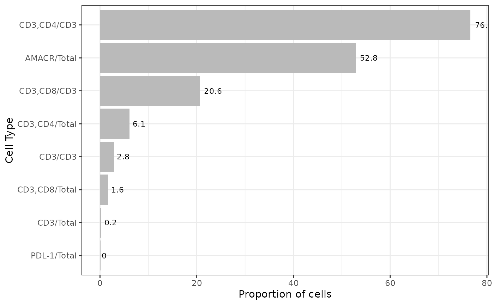
We may see incorrect phenotypes present in the input data. For example, cells might be incorrectly assigned a phenotype such as “AMACR,CD3,” both a tumour cell (AMACR) and an immune cell phenotype (CD3), which is biologically implausible. Incorrect cell phenotypes may be present due to low cell segmentation quality, antibody ‘bleeding’ from one cell to another or inadequate marker thresholding.
We can use marker_permutation to help identify if incorrect cell phenotypes are present. This permutes the marker labels of cells to create a null distribution, and then calculates the empirical p-value of whether an image is enriched or depleted in a particular combination of markers. A low P value for Depletion.p suggests the phenotype is unreliable. However, it is not absolute and it is recommended to review the results.
# permute marker labels of cells
sig <- marker_permutation(formatted_image, num_iter = 100)
# sort by Observed_cell_number
sig.sorted <- sig[order(-sig$Observed_cell_number), ]
# take a look
head(sig.sorted)## Percentage_of_occurrence Observed_cell_number
## AMACR 100 4446
## CD3,CD4 100 512
## CD3,CD8 100 138
## CD3 100 19
## PDL-1 83 4
## CD4 100 0
## Average_bootstrap_cell_number Enrichment.p Depletion.p
## AMACR 3778.66 0.01 1.00
## CD3,CD4 18.08 0.01 1.00
## CD3,CD8 5.20 0.01 1.00
## CD3 293.64 1.00 0.01
## PDL-1 1.58 0.01 1.00
## CD4 216.50 1.00 0.01If you identify incorrect phenotypes or have any you want to exclude you can do that with select_phenotypes.
data_subset <- select_phenotypes(formatted_image, keep=TRUE,
phenotypes = c("AMACR",
"CD3,CD8",
"PDL-1"))
print_phenotypes(data_subset)## [1] "AMACR" "CD3,CD8" "PDL-1"In this vignette we will work with all the original phenotypes present in formatted_image.
Boxplots of marker positive and negative cells
Incorrect or unreliable phenotyping of cells may also be identified through comparing the marker level for cells labelled positive and negative for a marker. Cells positive for a marker should have high levels of the marker. An unclear separation of marker intensities between positive and negative cells would suggest phenotypes have not been accurately assigned. We can use marker_intensity_boxplot to produce a boxplot for cells phenotyped as being positive or negative for a marker.
marker_intensity_boxplot(formatted_image, "CD3")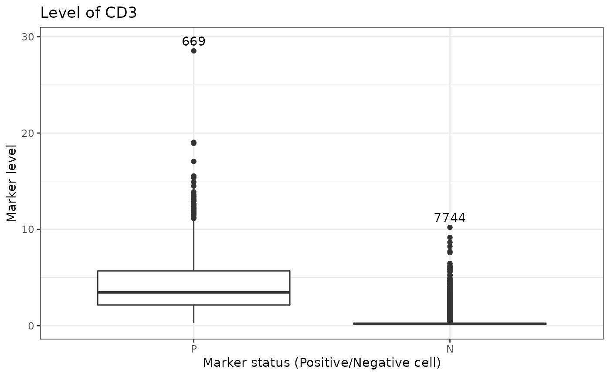
Note that some negative cells will have high marker intensity, and vice versa. This is because HALO and InForm use machine learning to determine positive cells, and not a strict threshold, and also take into account properties such as cell shape, nucleus size etc.
Predict cell phenotypes
SPIAT can predict cell phenotypes using the marker intensity levels with predict_phenotypes. This can be used to check the phenotypes that have been assigned by InForm and HALO. It can also potentially be used to automate the manual phenotypying performed with InForm/HALO. predict_phenotypes produces a density plot that shows the cutoff for calling a cell positive for a marker. It also prints to the console the number of true positives (TP), true negatives (TN), false positives (FP) and false negatives (FN). It returns a table containing the phenotypes predicted by SPIAT and the actual phenotypes from InForm/HALO. This can help show if we need to go back to Inform or HALO to refine the phenotyping. If you don’t have a tumour_marker you can use a marker that is present in many cells, that has at least one peak more than the main marker peak, a background peak, required by the algorithm. Of note, this algorithm does not take into account cell shape or size, so if these are required for phenotyping, manual phenotyping with HALO or InForm is recommended.
predicted_image <- predict_phenotypes(formatted_image,
thresholds = NULL,
tumour_marker = "AMACR",
baseline_markers = c("CD3", "CD4", "CD8"))## [1] "For CD3:"
## [1] "TP:660 TN:6646 FP:1098 FN:9"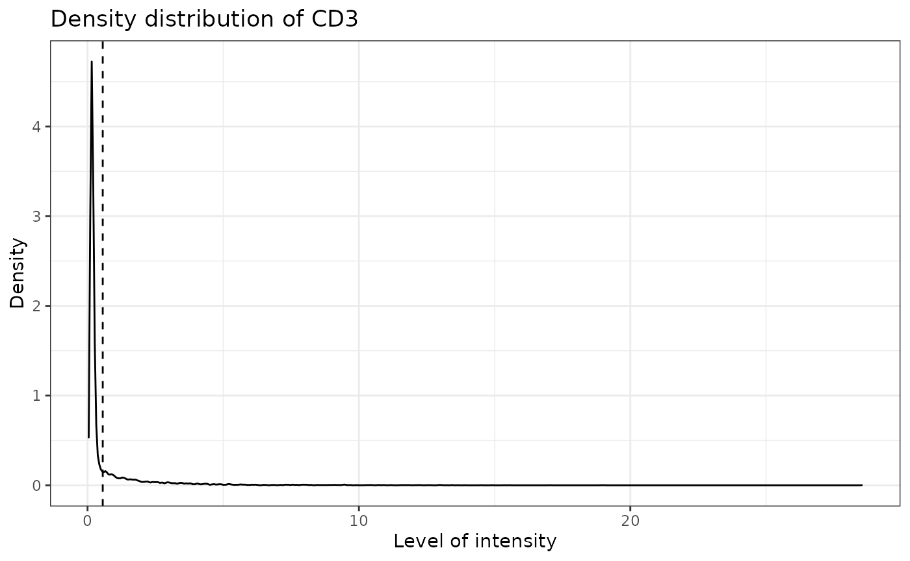
## [1] "For PDL-1:"
## [1] "TP:2 TN:8182 FP:227 FN:2"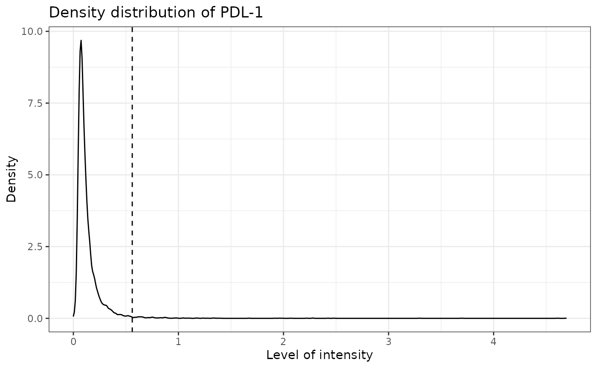
## [1] "For CD4:"
## [1] "TP:410 TN:7472 FP:429 FN:102"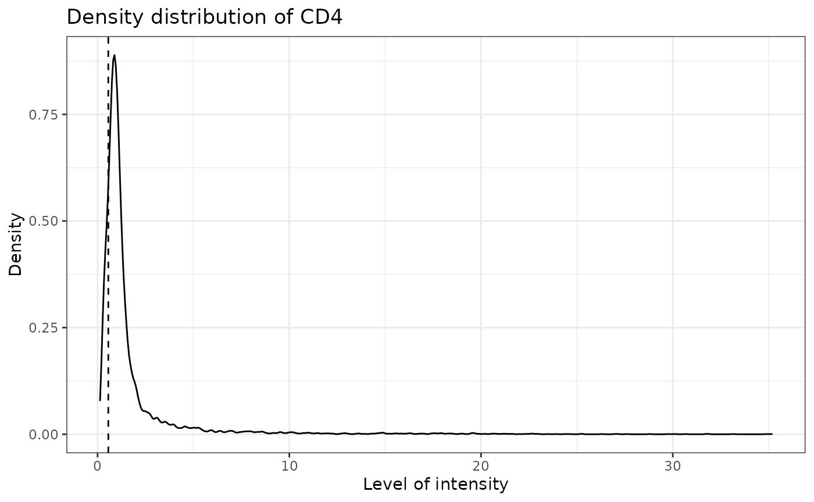
## [1] "For CD8:"
## [1] "TP:138 TN:7639 FP:636 FN:0"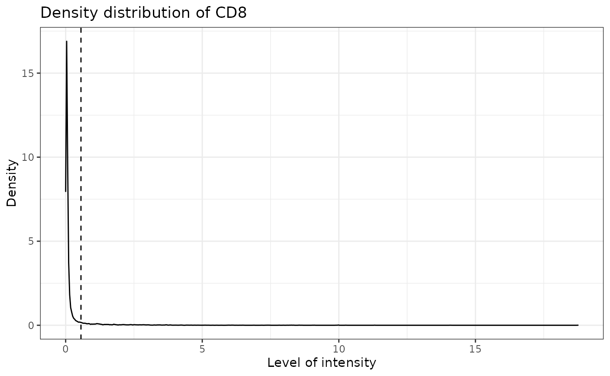
## [1] "For AMACR:"
## [1] "TP:4359 TN:3950 FP:17 FN:87"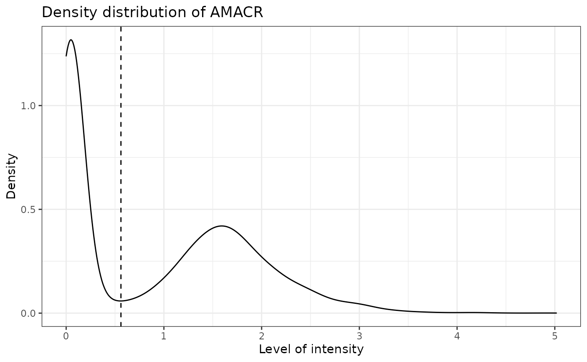
We can use marker_prediction_plot to plot the predicted cell phenotypes and the ones obtained using HALO or InForm, for comparison.
marker_prediction_plot(predicted_image, marker="CD3")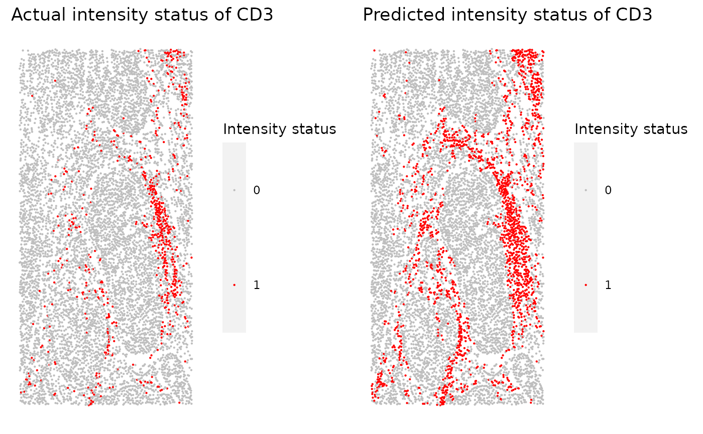
The plot shows CD3+ cells in the tissue. On the left are the CD3+ cells defined by InForm and on the right are the CD3+ cells predicted using SPIAT.
Scatter plots of marker level
Uneven marker staining or high background intensity can be identified with plot_cell_marker_levels. This produces a scatter plot of the intensity of a marker in each cell. Cells that were not phenotyped as being positive for the particular marker are excluded.
plot_cell_marker_levels(formatted_image, "CD3")Heatmaps of marker level
For large images, there is also the option of ‘blurring’ the image, where the image is split into multiple small areas, and marker intensities are averaged within each. The image is blurred based on the num_splits parameter.
plot_marker_level_heatmap(formatted_image, num_splits = 100, "AMACR")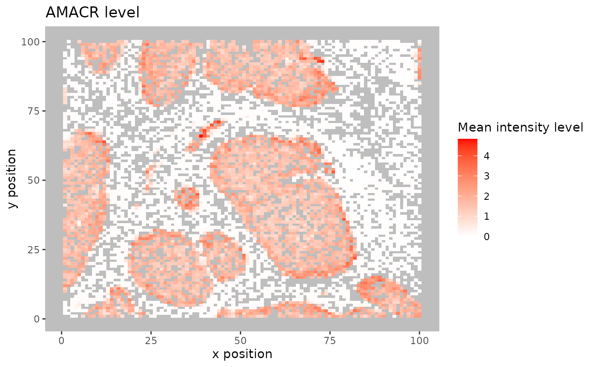
Visualizing tissues
In addition to the marker level tissue plots for QC, SPIAT has other methods for visualizing markers and phenotypes in tissues.
3D surface plot
We can visualize a selected marker in 3D with marker_surface_plot. The image is blurred based on the num_splits parameter.
marker_surface_plot(formatted_image, num_splits=15, marker="CD3")3D stacked surface plot
To visualize multiple markers in 3D in a single plot we can use marker_surface_plot_stack. This shows normalized intensity level of specified markers and enables the identification of co-occurring and mutually exclusive markers.
marker_surface_plot_stack(formatted_image, num_splits=15, markers=c("AMACR", "CD3"))The stacked surface plots of the AMACR (tumour cell) and CD3 (T cell) markers in this prostate tissue shows how AMACR and CD3 are mutually exclusive as the peaks and valleys are opposite.
Categorical dot plot
We can see the location of all phenotypes in the tissue with plot_cell_categories. Each dot in the plot corresponds to a cell and cells are coloured by phenotype. We can choose the colours for the phenotypes. Any phenotypes present in the data but not in the phenotypes of interest will be put in the category “OTHER” and coloured lightgrey.
phenotypes_of_interest <- c("AMACR", "CD3,CD8", "CD3,CD4", "PDL-1")
colour_vector <- c("darkgrey", "darkcyan", "skyBlue", "orange")
plot_cell_categories(formatted_image, phenotypes_of_interest, colour_vector)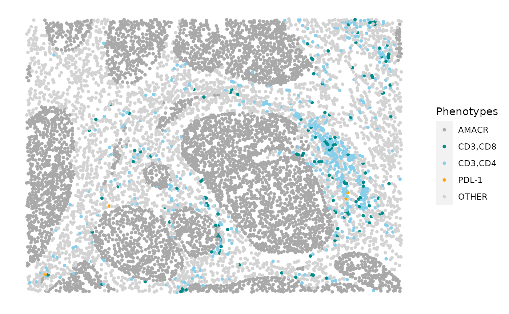
Gradients of cells
To determine whether two cell types are interacting with another, or if there is repulsion between them, SPIAT uses the concept of gradients. The assumption is that, if marker A intensity is high close to cells of marker B, and this value decreases as the distance from B increases, it suggests the cells are close and interacting. Conversely, if we see that marker A intensity is low when close to cells of marker B but increases with distance, it suggests there is repulsion between the two cell types.
plot_average_intensity calculates the average intensity of a target marker for a number of user-supplied radii values. It plots the intensity level at each specified radius as a line graph. The radius unit is pixels.
plot_average_intensity(formatted_image, reference_marker="CD8", target_marker="CD4", c(30, 35, 40, 45, 50, 75, 100))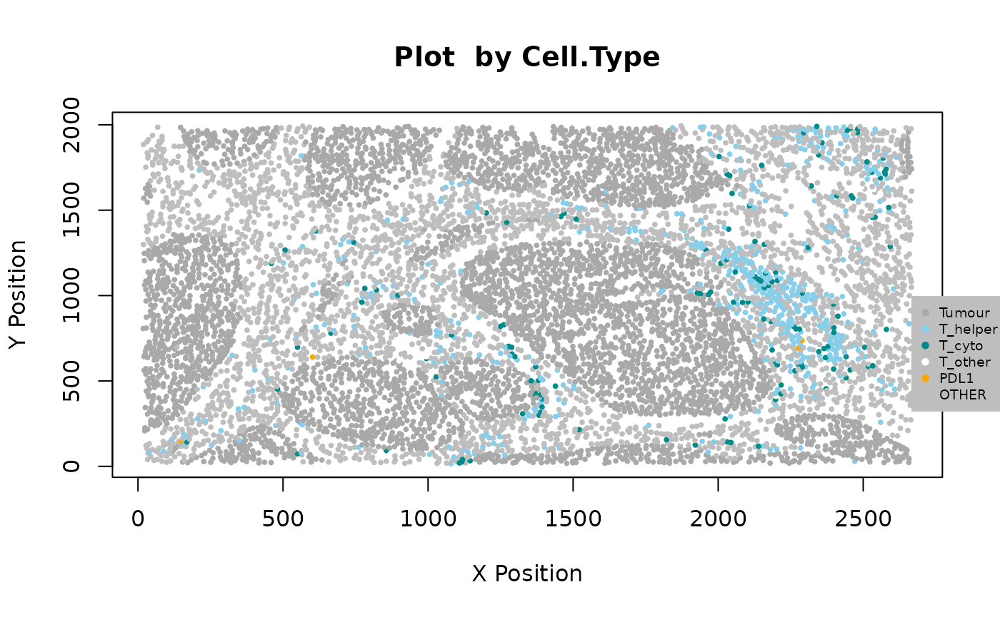
This plot shows that high levels of CD8 were observed in cells near CD4 cells and these levels decreased at larger radii. This suggests CD4 and CD8 cells may be closely interacting in this tissue.
We can use average_marker_intensity_within_radius to calculate the average intensity of the target_marker within a radius from the cells positive for the reference marker. Note that it pools all cells with the target marker that are within the specific radius of any reference cell. Results represent the average intensities within a radius, but do not correspond to metrics for each cell. This function can also be used to help identify radii values for plot_average_intensity.
average_marker_intensity_within_radius(formatted_image,
reference_marker ="CD8",
target_marker = "CD4",
radius=30)## [1] 10.13677Neighbourhood proportions
We can characterise cell aggregation in another way, through calculation of the neighbourhood proportion with percentage_of_cells_within_radius. Here, we define the proportion of a target cell type within the neighbourhood of a reference cell type within a defined radius. Cells with high neighbourhood proportions of the target cell type can indicate spatial sturctures. percentage_of_cells_within_radius can be used for the detection of gradients instead of average_marker_intensity_within_radius, however we recommend using the latter as it is faster, and it uses marker intensities so does not depend on cell phenotyping. The calculation is performed for each reference cell, so runtime will depend on the number of reference cells present.
p_cells_within_radius <- percentage_of_cells_within_radius(formatted_image, reference_phenotypes = "PDL-1", target_phenotypes = "AMACR", radius=100)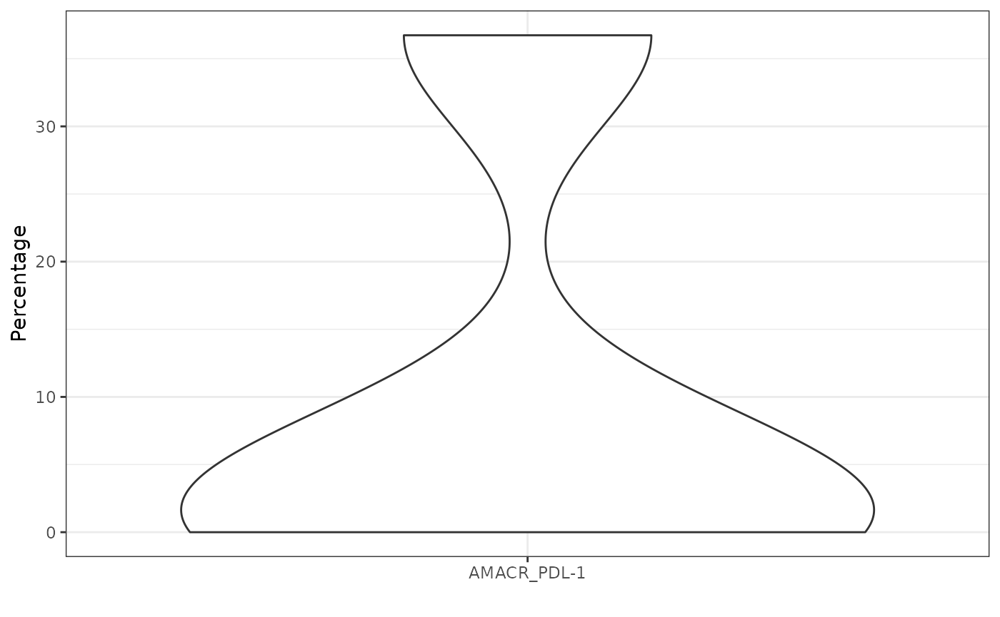
p_cells_within_radius## Cell_664 Cell_2760 Cell_2992 Cell_3147
## 5.357143 36.734694 0.000000 0.000000Distances between phenotypes
We can calculate the distances between two phenotypes (phenotype A and phenotype B) by identifying the closest cell of phenotype B to each of the cells of phenotype A with calculate_all_distances_between_phenotypes.
distances <- calculate_all_distances_between_phenotypes(formatted_image, remove_other = TRUE, cell_phenotypes_of_interest = c("CD3,CD4", "CD3,CD8"))This creates a distribution of minimum distances between phenotypes A and B, which can be visualized as a violin plot with plot_cell_distances_violin. Visualization of this distribution often reveals whether pairs of cells are evenly spaced across the image, or whether there are clusters of pairs of phenotypes.
plot_cell_distances_violin(distances)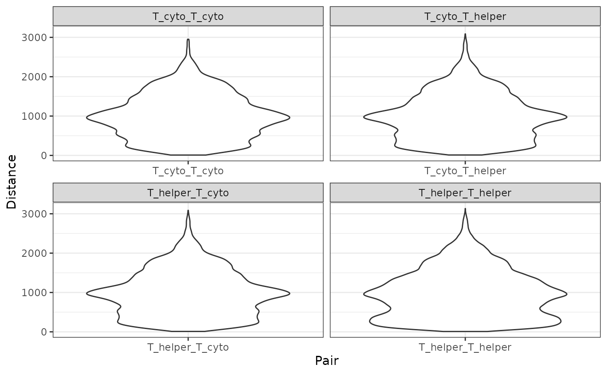
From this plot we can see that CD3,CD4 cells seem to be more closely interacting with each other, as there are shorter distances between those cells, than between CD3,CD8 cells or between CD3,CD4 and CD3,CD8 cells.
We can also calculate summary statistics for the distances between each combination of phenotypes, the mean, median and standard deviation, with calculate_summary_distances_between_phenotypes.
summary_distances <- calculate_summary_distances_between_phenotypes(formatted_image)## [1] "All markers are used in pair-wise distance calculation: "
## [1] "OTHER" "AMACR" "CD3,CD4" "CD3,CD8" "CD3" "PDL-1"These cell distances can then be visualized as a heatmap with plot_distance_heatmap.
plot_distance_heatmap(summary_distances)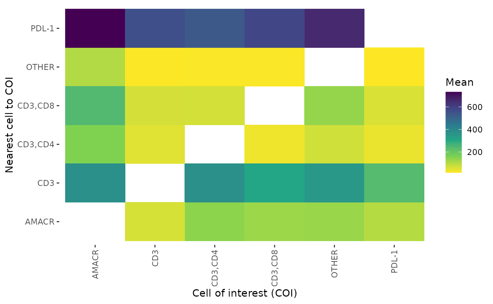
This plot shows that AMACR cells are interacting most closely with CD3,CD4, followed by CD3,CD8, while PDL-1 cells are more distant.
Cell mixing score
With SPIAT we can quantify how much two cell types are interacting through calculating a cell mixing score. This score was originally defined as the number of immune-tumor interactions divided by the number of immune-immune interactions (Keren et al. 2018). SPIAT generalizes this method to allow calculation of any two cell phenotypes. compute_mixing_score returns the mixing score between a reference marker and a target marker. This mixing score is defined as the number of target-reference interactions/number of reference-reference interactions within a specified radius. The higher the score the greater the mixing of the two cell types.
compute_mixing_score(formatted_image, reference_marker = "CD4", target_marker = "CD8")## [1] "Number of reference cells: 513"
## [1] "Number of target cells: 138"
## [1] "Number of reference-target interactions: 67"
## [1] "Number of reference-reference interactions: 412"## [1] 0.1626214Bordering cells
If we want to identify cells separating two distinct tissue areas, for example, cells at the tumour margin or at the border of tumour and stroma, we can use identify_bordering_cells. The algorithm is explained in the SPIAT paper (Yang et al. 2020). Here we use tumour cells (AMACR) as the reference to identify the bordering cells but any cell type can be used.
identify_bordering_cells(formatted_image, reference_marker = "AMACR",
rm_noise_radius = 50, radius = 100, lower_bound = 0.05,
upper_bound=0.7)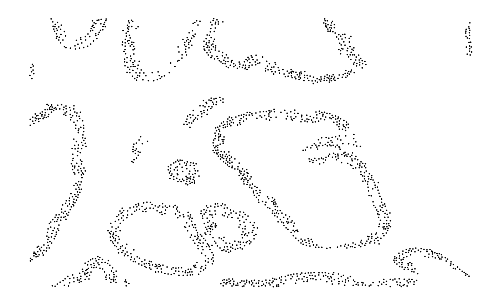
Cell properties
We can use measure_association_to_cell_properties to compare two phenotypes for one of the cell properties, such as Cell.Area (see the HALO and InForm format section above for the cell properties available). Method options are density plot, boxplot, t test or wilcoxon test.
# boxplot
measure_association_to_cell_properties(formatted_image,
phenotypes = c("CD3,CD4", "CD3,CD8"),
property = "Cell.Area",
method = "box")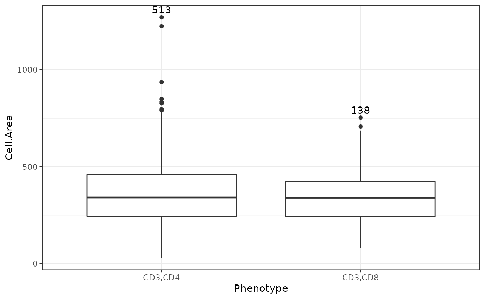
# t test
measure_association_to_cell_properties(formatted_image,
phenotypes = c("CD3,CD4", "CD3,CD8"),
property = "Cell.Area",
method = "t")##
## Welch Two Sample t-test
##
## data: CD3,CD4 and CD3,CD8
## t = 2.1766, df = 259.32, p-value = 0.03041
## alternative hypothesis: true difference in means is not equal to 0
## 95 percent confidence interval:
## 2.783879 55.630562
## sample estimates:
## mean of x mean of y
## 369.1637 339.9565Clusters and communities
We can determine if there are aggregates (or a lack of aggregates) of a particular phenotype or combination of phenotypes. SPIAT can be used to identify two types of cell aggregates, clusters and communities.
Clusters are cell aggregates composed of non-tumour cells, often by immune cells. For the detection of clusters, identify_cell_clusters only considers cell phenotypes of interest defined by the user. Euclidean distances between cells are calculated, and pairs of cells with a distance less than a threshold are considered to be ‘interacting,’ with the rest being ‘non-interacting.’ Hierarchical clustering is then used to separate the clusters. We need to specify a radius. The radius corresponds to how lenient we are in defining clusters. A bigger radius would mean we are more likely to merge individual clusters. The radius is chosen based on what looks ‘reasonable.’ Cells not assigned to clusters (“free” cells) are assigned to Cluster_NA in the output table.
clusters <- identify_cell_clusters(formatted_image, phenotypes_of_interest = c("CD3,CD4", "CD3,CD8"), radius = 100)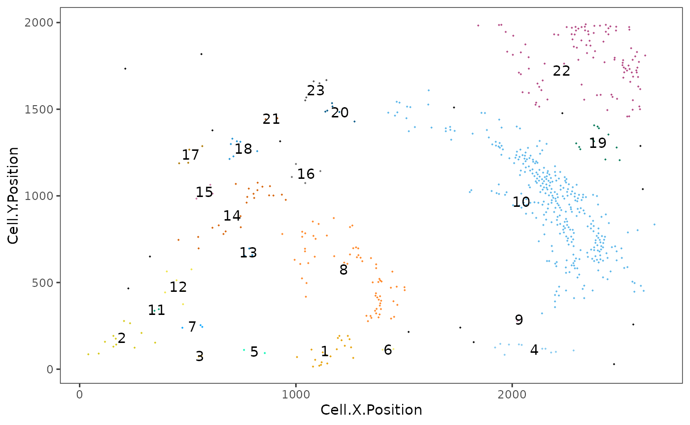
This plot shows clusters of CD3,CD4 and CD3,CD8 cells. Each number and colour corresponds to a distinct cluster. Black cells correspond to ‘free,’ un-clustered cells.
Users are recommended to test out different thresholds and then visualize the clustering results. But SPIAT also has average_minimum_distance, which calculates the average minimum distance between all cells in an image, and can be used as a starting point.
average_minimum_distance(formatted_image)## [1] 15.92421Communities correspond to micro-niches or micro-ecosystems of cells that are located close to each other (Jackson et al. 2020). The main distinction between clusters and communities is that the algorithm for the detection of communities used by identify_cell_communities does not take into account cell phenotype. Therefore, communities often consist of a combination of different cell types, including tumour cells. dbscan is used as the clustering algorithm to detect communities (Hahsler, Piekenbrock, and Doran 2019). Cells without a phenotype are excluded.
communities <- identify_cell_communities(formatted_image, radius=100)
This plot shows communities of cells in the tissue. Each number and colour corresponds to a distinct community.
We can visualize the cell composition of clusters or communities. This allows us to determine whether there are regions where cells of different types are interacting, or whether there is little mixing between celltypes. To do this, we can use composition_of_clusters_and_communities to obtain the percentages of cells with a specific marker within each cluster and the number of cells in the cluster.
clusters_vis <- composition_of_clusters_and_communities(clusters, "Cluster")
clusters_vis <- clusters_vis[clusters_vis$Total_number_of_cells >=5,]Then we can use plot_composition_heatmap to produce a heatmap showing the marker percentages within each cluster.
plot_composition_heatmap(clusters_vis, column_to_consider="Cluster")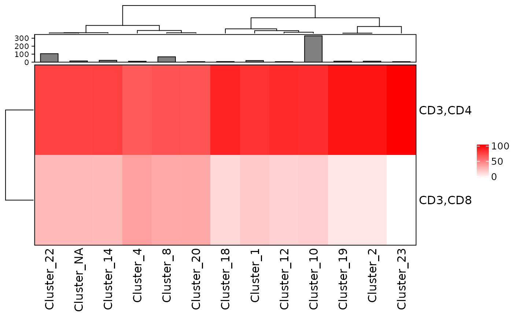
This plot shows that most clusters are composed of a mixture of CD3,CD4 and CD3,CD8 cells and some are more dominated by CD3,CD4 than others.
We can visualize the composition of the communities in a similiar way.
communities_vis <- composition_of_clusters_and_communities(communities, "Community")
plot_composition_heatmap(communities_vis, column_to_consider="Community")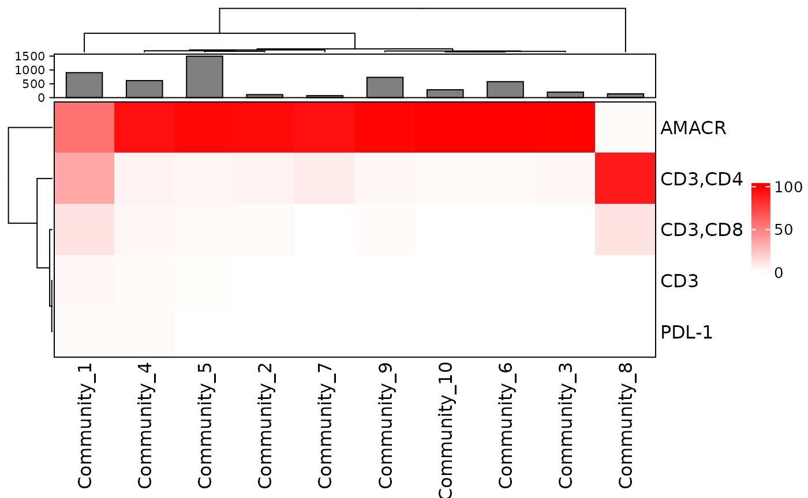
This plot shows that several communities detected have a combination of tumour (AMACR) and immune cells while some are dominated by tumour or immune cells.
Reproducibility
## R Under development (unstable) (2021-01-21 r79854)
## Platform: x86_64-pc-linux-gnu (64-bit)
## Running under: Ubuntu 20.04.1 LTS
##
## Matrix products: default
## BLAS/LAPACK: /usr/lib/x86_64-linux-gnu/openblas-pthread/libopenblasp-r0.3.8.so
##
## locale:
## [1] LC_CTYPE=en_US.UTF-8 LC_NUMERIC=C
## [3] LC_TIME=en_US.UTF-8 LC_COLLATE=en_US.UTF-8
## [5] LC_MONETARY=en_US.UTF-8 LC_MESSAGES=C
## [7] LC_PAPER=en_US.UTF-8 LC_NAME=C
## [9] LC_ADDRESS=C LC_TELEPHONE=C
## [11] LC_MEASUREMENT=en_US.UTF-8 LC_IDENTIFICATION=C
##
## attached base packages:
## [1] parallel stats4 stats graphics grDevices utils datasets
## [8] methods base
##
## other attached packages:
## [1] SPIAT_0.99.0 SingleCellExperiment_1.13.6
## [3] SummarizedExperiment_1.21.1 Biobase_2.51.0
## [5] GenomicRanges_1.43.3 GenomeInfoDb_1.27.5
## [7] IRanges_2.25.6 S4Vectors_0.29.6
## [9] BiocGenerics_0.37.0 MatrixGenerics_1.3.1
## [11] matrixStats_0.58.0 BiocStyle_2.19.1
##
## loaded via a namespace (and not attached):
## [1] bitops_1.0-6 fs_1.5.0 bit64_4.0.5
## [4] RColorBrewer_1.1-2 httr_1.4.2 rprojroot_2.0.2
## [7] tools_4.1.0 R6_2.5.0 lazyeval_0.2.2
## [10] colorspace_2.0-0 GetoptLong_1.0.5 tidyselect_1.1.0
## [13] gridExtra_2.3 bit_4.0.4 compiler_4.1.0
## [16] textshaping_0.2.1 Cairo_1.5-12.2 desc_1.2.0
## [19] DelayedArray_0.17.7 plotly_4.9.3 labeling_0.4.2
## [22] bookdown_0.21 scales_1.1.1 dittoSeq_1.3.5
## [25] ggridges_0.5.3 pkgdown_1.6.1 systemfonts_1.0.0
## [28] stringr_1.4.0 apcluster_1.4.8 digest_0.6.27
## [31] dbscan_1.1-5 rmarkdown_2.6 XVector_0.31.1
## [34] pkgconfig_2.0.3 htmltools_0.5.1.1 highr_0.8
## [37] fastmap_1.1.0 htmlwidgets_1.5.3 rlang_0.4.10
## [40] GlobalOptions_0.1.2 farver_2.0.3 shape_1.4.5
## [43] generics_0.1.0 jsonlite_1.7.2 crosstalk_1.1.1
## [46] vroom_1.4.0 mmand_1.6.1 gtools_3.8.2
## [49] dplyr_1.0.4 RCurl_1.98-1.2 magrittr_2.0.1
## [52] GenomeInfoDbData_1.2.4 Matrix_1.3-2 Rcpp_1.0.6
## [55] munsell_0.5.0 lifecycle_0.2.0 stringi_1.5.3
## [58] yaml_2.2.1 zlibbioc_1.37.0 plyr_1.8.6
## [61] grid_4.1.0 ggrepel_0.9.1 crayon_1.4.0
## [64] lattice_0.20-41 cowplot_1.1.1 circlize_0.4.12
## [67] knitr_1.31 ComplexHeatmap_2.7.5 pillar_1.4.7
## [70] rjson_0.2.20 reshape2_1.4.4 glue_1.4.2
## [73] evaluate_0.14 data.table_1.13.6 BiocManager_1.30.10
## [76] png_0.1-7 vctrs_0.3.6 gtable_0.3.0
## [79] RANN_2.6.1 purrr_0.3.4 tidyr_1.1.2
## [82] clue_0.3-58 assertthat_0.2.1 cachem_1.0.1
## [85] ggplot2_3.3.3 xfun_0.20 pracma_2.3.3
## [88] ragg_0.4.1 viridisLite_0.3.0 tibble_3.0.6
## [91] pheatmap_1.0.12 memoise_2.0.0 cluster_2.1.0
## [94] ellipsis_0.3.1